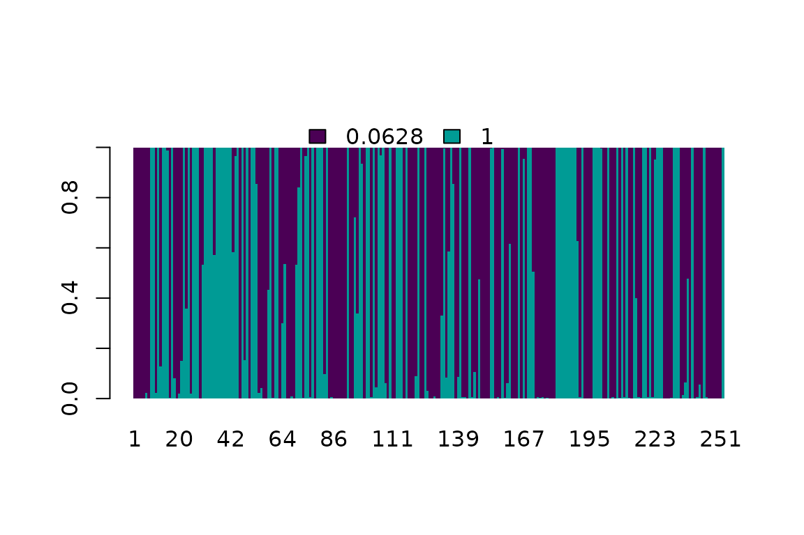
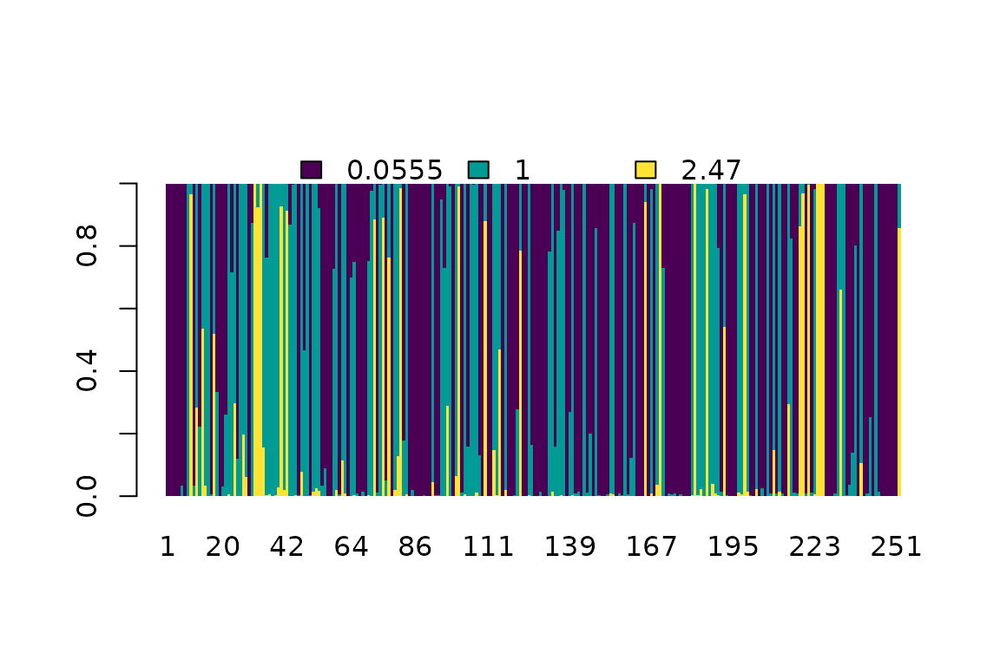

Markov models and transition rate matrices
Klaus Schliep, Iris Bardel-Kahr
Graz University of Technology, University of Grazklaus.schliep@gmail.com
2023-01-17
Source:vignettes/AdvancedFeatures.Rmd
AdvancedFeatures.RmdIntroduction
This document illustrates some of the phangorn (Schliep 2011) specialized features which are useful but maybe not as well-known or just not (yet) described elsewhere. This is mainly interesting for someone who wants to explore different models or set up some simulation studies. We show how to construct data objects for different character states other than nucleotides or amino acids or how to set up different models to estimate transition rate.
The vignettes Estimating phylogenetic trees with phangorn and Phylogenetic trees from morphological data describe in detail how to estimate phylogenies from nucleotides, amino acids or morphological data.
User defined data formats
To better understand how to define our own data type it is useful to
know a bit more about the internal representation of phyDat
objects. The internal representation of phyDat object is
very similar to factor objects.
As an example we will show here several possibilities to define nucleotide data with gaps defined as a fifth state. Ignoring gaps or coding them as ambiguous sites - as it is done in most programs, also in phangorn as default - may be misleading (see (Warnow 2012)). When the number of gaps is low and randomly distributed, coding gaps as separate state may be not important.
Let’s assume we have given a matrix where each row contains a character vector of a taxonomic unit:
## Loading required package: ape
data <- matrix(c("r","a","y","g","g","a","c","-","c","t","c","g",
"a","a","t","g","g","a","t","-","c","t","c","a",
"a","a","t","-","g","a","c","c","c","t","?","g"),
dimnames = list(c("t1", "t2", "t3"),NULL), nrow=3, byrow=TRUE)
data## [,1] [,2] [,3] [,4] [,5] [,6] [,7] [,8] [,9] [,10] [,11] [,12]
## t1 "r" "a" "y" "g" "g" "a" "c" "-" "c" "t" "c" "g"
## t2 "a" "a" "t" "g" "g" "a" "t" "-" "c" "t" "c" "a"
## t3 "a" "a" "t" "-" "g" "a" "c" "c" "c" "t" "?" "g"Normally we would transform this matrix into a phyDat object and gaps are handled as ambiguous character (like “?”).
gapsdata1 <- phyDat(data)
gapsdata1## 3 sequences with 12 character and 11 different site patterns.
## The states are a c g tNow we will define a “USER” defined object and have to supply a vector of levels of the character states for the new data – in our case the four nucleotide states and the gap. Additionally we can define ambiguous states which can be any of the states.
## Warning in phyDat.default(data, levels = levels, return.index = return.index, :
## Found unknown characters (not supplied in levels). Deleted sites with unknown
## states.
gapsdata2## 3 sequences with 10 character and 9 different site patterns.
## The states are a c g t -This is not yet what we wanted, as two sites of our alignment - which contain the ambiguous characters “r” and “y” - got deleted. To define ambiguous characters like “r” and “y” explicitly we have to supply a contrast matrix similar to contrasts for factors.
contrast <- matrix(data = c(1,0,0,0,0,
0,1,0,0,0,
0,0,1,0,0,
0,0,0,1,0,
1,0,1,0,0,
0,1,0,1,0,
0,0,0,0,1,
1,1,1,1,0,
1,1,1,1,1),
ncol = 5, byrow = TRUE)
dimnames(contrast) <- list(c("a","c","g","t","r","y","-","n","?"),
c("a", "c", "g", "t", "-"))
contrast## a c g t -
## a 1 0 0 0 0
## c 0 1 0 0 0
## g 0 0 1 0 0
## t 0 0 0 1 0
## r 1 0 1 0 0
## y 0 1 0 1 0
## - 0 0 0 0 1
## n 1 1 1 1 0
## ? 1 1 1 1 1
gapsdata3 <- phyDat(data, type="USER", contrast=contrast)
gapsdata3## 3 sequences with 12 character and 11 different site patterns.
## The states are a c g t -Here we defined “n” as a state which can be any nucleotide, but not a gap. “-” and “?” can be any state including a gap.
These data can be used in all functions available in phangorn to compute distance matrices or perform parsimony and maximum likelihood analysis.
Markov models of character evolution
To model nucleotide substitutions across the edges of a tree T we can assign a transition matrix. In the case of nucleotides, with four character states, each 4 \(\times\) 4 transition matrix has, at most, 12 free parameters.
Time-reversible Markov models are used to describe how characters change over time, and use fewer parameters. Time-reversible means that these models need not be directed in time, and the Markov property states that these models depend only on the current state. These models are used in analyses of phylogenies using maximum likelihood and MCMC, computing pairwise distances, as well as in simulating sequence evolution.
We will now describe the General Time-Reversible (GTR) model (Tavaré 1986). The parameters of the GTR model are the equilibrium frequencies \(\pi = (\pi_A ,\pi_C ,\pi_G ,\pi_T)\) and a rate matrix \(Q\) which has the form \[\begin{equation} Q = \begin{pmatrix} \ast & \alpha\pi_C & \beta\pi_G & \gamma\pi_T \\ \alpha\pi_A & \ast & \delta\pi_G & \epsilon\pi_T \\ \beta\pi_A & \delta\pi_C & \ast & \eta\pi_T \\ \gamma\pi_A & \epsilon\pi_C & \eta\pi_G & \ast \\ \end{pmatrix} (1) \end{equation}\]
where we need to assign 6 parameters \(\alpha, \dots, \eta\). The elements on the diagonal are chosen so that the rows sum to zero. The Jukes-Cantor (JC) (Jukes and Cantor 1969) model can be derived as special case from the GTR model, for equal equilibrium frequencies \(\pi_A = \pi_C = \pi_G = \pi_T = 0.25\) and equal rates set to \(\alpha = \beta = \gamma = \delta = \eta\). Table 2 lists all built-in nucleotide models in phangorn. The transition probabilities, which describe the probabilities of change from character \(i\) to \(j\) in time \(t\), are given by the corresponding entries of the matrix exponential \[ P(t) = (p_{ij}(t)) = e^{Qt}, \qquad \sum_j p_{ij}=1 \] where \(P(t)\) is the transition matrix spanning a period of time \(t\).
Estimation of non-standard transition rate matrices
In the section User defined data formats we described how to set up user defined data formats. Now we describe how to estimate transition matrices with pml.
Again for nucleotide data the most common models can be called
directly in the optim.pml function (e.g. “JC69”, “HKY”,
“GTR” to name a few). Table 2 lists all the available nucleotide models,
which can estimated directly in optim.pml. For amino acids
several transition matrices are available (“WAG”, “JTT”, “LG”,
“Dayhoff”, “cpREV”, “mtmam”, “mtArt”, “MtZoa”, “mtREV24”, “VT”,“RtREV”,
“HIVw”, “HIVb”, “FLU”, “Blosum62”, “Dayhoff_DCMut” and “JTT-DCMut”) or
can be estimated with optim.pml. For example Mathews, Clements, and Beilstein (2010) used
this function to estimate a phytochrome amino acid transition
matrix.
We will now show how to estimate a rate matrix with different transition (\(\alpha\)) and transversion ratio (\(\beta\)) and a fixed rate to the gap state (\(\gamma\)) - a kind of Kimura two-parameter model (K81) for nucleotide data with gaps as fifth state (see table 1).
| a | c | g | t | - | |
|---|---|---|---|---|---|
| a | |||||
| c | \(\beta\) | ||||
| g | \(\alpha\) | \(\beta\) | |||
| t | \(\beta\) | \(\alpha\) | \(\beta\) | ||
| - | \(\gamma\) | \(\gamma\) | \(\gamma\) | \(\gamma\) |
If we want to fit a non-standard transition rate matrix, we have to
tell optim.pml which transitions in Q get the same rate.
The parameter vector subs accepts a vector of consecutive integers and
at least one element has to be zero (these get the reference rate of 1).
Negative values indicate that there is no direct transition possible and
the rate is set to zero.
library(ape)
tree <- unroot(rtree(3))
fit <- pml(tree, gapsdata3)
fit <- optim.pml(fit, optQ=TRUE, subs=c(1,0,1,2,1,0,2,1,2,2),
control=pml.control(trace=0))
fit## model: Mk
## loglikelihood: -33.01
## unconstrained loglikelihood: -28.43
##
## Rate matrix:
## a c g t -
## a 0.000e+00 2.584e-06 1.000e+00 2.584e-06 0.6912
## c 2.584e-06 0.000e+00 2.584e-06 1.000e+00 0.6912
## g 1.000e+00 2.584e-06 0.000e+00 2.584e-06 0.6912
## t 2.584e-06 1.000e+00 2.584e-06 0.000e+00 0.6912
## - 6.912e-01 6.912e-01 6.912e-01 6.912e-01 0.0000
##
## Base frequencies:
## a c g t -
## 0.2 0.2 0.2 0.2 0.2Here are some conventions how the models are estimated:
If a model is supplied the base frequencies bf and rate matrix Q are optimized according to the model (nucleotides) or the adequate rate matrix and frequencies are chosen (for amino acids). If optQ=TRUE and neither a model nor subs are supplied then a symmetric (optBf=FALSE) or reversible model (optBf=TRUE, i.e. the GTR for nucleotides) is estimated. This can be slow if the there are many character states, e.g. for amino acids. Table 2 shows how parameters are optimized and the number of parameters to estimate. The elements of the vector subs correspond to \(\alpha, \dots, \eta\) in equation (1)
| model | optQ | optBf | subs | df |
|---|---|---|---|---|
| JC | FALSE | FALSE | \(c(0, 0, 0, 0, 0, 0)\) | 0 |
| F81 | FALSE | TRUE | \(c(0, 0, 0, 0, 0, 0)\) | 3 |
| K80 | TRUE | FALSE | \(c(0, 1, 0, 0, 1, 0)\) | 1 |
| HKY | TRUE | TRUE | \(c(0, 1, 0, 0, 1, 0)\) | 4 |
| TrNe | TRUE | FALSE | \(c(0, 1, 0, 0, 2, 0)\) | 2 |
| TrN | TRUE | TRUE | \(c(0, 1, 0, 0, 2, 0)\) | 5 |
| TPM1 | TRUE | FALSE | \(c(0, 1, 2, 2, 1, 0)\) | 2 |
| K81 | TRUE | FALSE | \(c(0, 1, 2, 2, 1, 0)\) | 2 |
| TPM1u | TRUE | TRUE | \(c(0, 1, 2, 2, 1, 0)\) | 5 |
| TPM2 | TRUE | FALSE | \(c(1, 2, 1, 0, 2, 0)\) | 2 |
| TPM2u | TRUE | TRUE | \(c(1, 2, 1, 0, 2, 0)\) | 5 |
| TPM3 | TRUE | FALSE | \(c(1, 2, 0, 1, 2, 0)\) | 2 |
| TPM3u | TRUE | TRUE | \(c(1, 2, 0, 1, 2, 0)\) | 5 |
| TIM1e | TRUE | FALSE | \(c(0, 1, 2, 2, 3, 0)\) | 3 |
| TIM1 | TRUE | TRUE | \(c(0, 1, 2, 2, 3, 0)\) | 6 |
| TIM2e | TRUE | FALSE | \(c(1, 2, 1, 0, 3, 0)\) | 3 |
| TIM2 | TRUE | TRUE | \(c(1, 2, 1, 0, 3, 0)\) | 6 |
| TIM3e | TRUE | FALSE | \(c(1, 2, 0, 1, 3, 0)\) | 3 |
| TIM3 | TRUE | TRUE | \(c(1, 2, 0, 1, 3, 0)\) | 6 |
| TVMe | TRUE | FALSE | \(c(1, 2, 3, 4, 2, 0)\) | 4 |
| TVM | TRUE | TRUE | \(c(1, 2, 3, 4, 2, 0)\) | 7 |
| SYM | TRUE | FALSE | \(c(1, 2, 3, 4, 5, 0)\) | 5 |
| GTR | TRUE | TRUE | \(c(1, 2, 3, 4, 5, 0)\) | 8 |
Predefined models for user defined data
So far there are 4 models which are just a generalization from nucleotide models allowing different number of states. In many cases only the equal rates (ER) model will be appropriate.
| DNA | USER |
|---|---|
| JC | ER |
| F81 | FREQ |
| SYM | SYM |
| GTR | GTR |
There is an additional model ORDERED, which assumes ordered characters and only allows to switch between neighboring states. Table 3 show the corresponding rate matrix.
| a | b | c | d | e | |
|---|---|---|---|---|---|
| a | |||||
| b | 1 | ||||
| c | 0 | 1 | |||
| d | 0 | 0 | 1 | ||
| e | 0 | 0 | 0 | 1 |
Codon substitution models
A special case of the transition rates are codon models.
phangorn now offers the possibility to estimate the \(d_N/d_S\) ratio (sometimes called ka/ks),
for an overview see (Yang 2014). These
functions extend the option to estimate the \(d_N/d_S\) ratio for pairwise sequence
comparison as it is available through the function kaks in
seqinr. The transition rate between between codon \(i\) and \(j\) is defined as follows: \[\begin{eqnarray}
q_{ij}=\left\{
\begin{array}{l@{\quad}l}
0 & \textrm{if i and j differ in more than one position} \\
\pi_j & \textrm{for synonymous transversion} \\
\pi_j\kappa & \textrm{for synonymous transition} \\
\pi_j\omega & \textrm{for non-synonymous transversion} \\
\pi_j\omega\kappa & \textrm{for non-synonymous transition}
\end{array}
\right. \nonumber
\end{eqnarray}\]
where \(\omega\) is the \(d_N/d_S\) ratio, \(\kappa\) the transition transversion ratio and \(\pi_j\) is the the equilibrium frequency of codon \(j\). For \(\omega\sim1\) the amino acid change is neutral, for \(\omega < 1\) purifying selection and \(\omega > 1\) positive selection.
Here we use a data set from and follow loosely the example in Bielawski and Yang (2005). We first read in an
alignment and phylogenetic tree for 45 sequences of the nef gene in the
Human HIV-2 Genome using read.phyDat function.
fdir <- system.file("extdata/trees", package = "phangorn")
hiv_2_nef <- read.phyDat(file.path(fdir, "seqfile.txt"), format="sequential")
tree <- read.tree(file.path(fdir, "tree.txt"))With the tree and data set we can estimate currently 3 different site models:
- The M0 model with a constant \(\omega\), where \(\omega\) estimates the average over all
sites of the alignment. M0 does not allow for distinct \(\omega\) and identifies classes, therefore
we will not retrieve any information regarding positive selection.
- The M1a or nearly neutral model estimates two different \(\omega\) value classes (\(\omega=1\) & \(\omega<1\)).
- The M2a or positive selection model estimates three different classes of \(\omega\) (negative selection \(\omega<1\), neutral selection \(\omega=1\), positive selection \(\omega>1\)). One can use a likelihood ratio test to compare the M1a and M2a to for positive selection.
cdn <- codonTest(tree, hiv_2_nef)
cdn## model Frequencies estimate logLik df AIC BIC dnds_0 dnds_1 dnds_2
## 1 M0 F3x4 empirical -9773 98 19741 20087 0.50486 NA NA
## 2 M1a F3x4 empirical -9313 99 18824 19168 0.06281 1 NA
## 3 M2a F3x4 empirical -9244 101 18689 19040 0.05551 1 2.469
## p_0 p_1 p_2 tstv
## 1 1.0000 NA NA 4.418
## 2 0.5563 0.4437 NA 4.364
## 3 0.5227 0.3617 0.1156 4.849Currently the choice of site models is limited to the three models mentioned above and are no branch models implemented so far.
We can identify sites under positive selection using the Na"ive empirical Bayes (NEB) method of Yang and Nielsen (1998): \[ P(\omega|x_h) = \frac{P(X_h|\omega_i)p_i}{P(X_h)} = \frac{P(X_h|\omega_i)p_i}{\sum_j P(X_h|\omega_j)p_j} \]
plot(cdn, "M1a")
plot(cdn, "M2a")
A lot if implementations differ in the way the codon frequencies are
derived. The M0 model can be also estimated using pml and
optim.pml functions. There are several ways to estimate the
codon frequencies \(\pi_j\). The
simplest model is to assume they have equal frequencies (=1/61). A
second is to use the empirical codon frequencies, either computed using
baseFreq or using the argument bf="empirical"
in pml. This is usually not really good as some codons are
rare and have a high variance. One can estimate the frequencies from
nucleotide frequencies with the F1x4 model. Last but not least the
frequencies can be derived from the base frequencies at each codon
position, the F3x4 model is set by the argument
bf="F3x4".
treeM0 <- cdn$estimates[["M0"]]$tree # tree with edge lengths
M0 <- pml(treeM0, dna2codon(hiv_2_nef), bf="F3x4")
M0 <- optim.pml(M0, model="codon1", control=pml.control(trace=0))
M0## model: codon1
## loglikelihood: -9773
## unconstrained loglikelihood: -1372
## dn/ds: 0.5049
## ts/tv: 4.418
## Freq: F3x4For the F3x4 model can optimize the codon frequencies setting the
option to optBf=TRUE in optim.pml.
M0_opt <- optim.pml(M0, model="codon1", optBf=TRUE, control=pml.control(trace=0))
M0_opt## model: codon1
## loglikelihood: -9668
## unconstrained loglikelihood: -1372
## dn/ds: 0.51
## ts/tv: 4.581
## Freq: F3x4Session info
## R version 4.2.2 (2022-10-31)
## Platform: x86_64-pc-linux-gnu (64-bit)
## Running under: Ubuntu 22.04.1 LTS
##
## Matrix products: default
## BLAS: /usr/lib/x86_64-linux-gnu/openblas-pthread/libblas.so.3
## LAPACK: /usr/lib/x86_64-linux-gnu/openblas-pthread/libopenblasp-r0.3.20.so
##
## locale:
## [1] LC_CTYPE=C.UTF-8 LC_NUMERIC=C LC_TIME=C.UTF-8
## [4] LC_COLLATE=C.UTF-8 LC_MONETARY=C.UTF-8 LC_MESSAGES=C.UTF-8
## [7] LC_PAPER=C.UTF-8 LC_NAME=C LC_ADDRESS=C
## [10] LC_TELEPHONE=C LC_MEASUREMENT=C.UTF-8 LC_IDENTIFICATION=C
##
## attached base packages:
## [1] stats graphics grDevices utils datasets methods base
##
## other attached packages:
## [1] phangorn_2.10.0.900 ape_5.6-2
##
## loaded via a namespace (and not attached):
## [1] Rcpp_1.0.9 highr_0.10 bslib_0.4.2 compiler_4.2.2
## [5] jquerylib_0.1.4 tools_4.2.2 digest_0.6.31 jsonlite_1.8.4
## [9] evaluate_0.19 memoise_2.0.1 lifecycle_1.0.3 nlme_3.1-160
## [13] lattice_0.20-45 pkgconfig_2.0.3 rlang_1.0.6 Matrix_1.5-1
## [17] fastmatch_1.1-3 igraph_1.3.5 cli_3.6.0 yaml_2.3.6
## [21] parallel_4.2.2 pkgdown_2.0.7 xfun_0.36 fastmap_1.1.0
## [25] stringr_1.5.0 knitr_1.41 desc_1.4.2 generics_0.1.3
## [29] fs_1.5.2 vctrs_0.5.1 sass_0.4.4 systemfonts_1.0.4
## [33] rprojroot_2.0.3 grid_4.2.2 glue_1.6.2 R6_2.5.1
## [37] textshaping_0.3.6 rmarkdown_2.19 purrr_1.0.1 magrittr_2.0.3
## [41] codetools_0.2-18 htmltools_0.5.4 quadprog_1.5-8 ragg_1.2.5
## [45] stringi_1.7.12 cachem_1.0.6